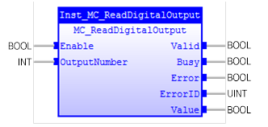

MC_ReadDigitalOutput
Gives access to the value of the specified output.

Description:
When ‘Enable’ changes to TRUE, the FB reads the value of the
selected output signal continuously.
Select the corresponding output by ‘OutputNumber’.
'OutputNumber' should be given a valid value while ‘Valid’
is TRUE, otherwise the FB will generate an error.
This Function Block does not affect the PLCopen state
machine.
Make sure the input and output parameters are of data type
indicated in the table below.
It is not guaranteed that the digital signal will be seen by the
FB: a short pulse on the digital output could be over before the next Function
Block cycle occurs.
The ‘OutputNumber’ range is based on hardware configuration.
Inputs/Outputs:
|
Name
|
Data Type
|
Description
|
|
INPUTS
|
|
Enable
|
BOOL
|
Get the value of the selected output
signal continuously while enabled.
|
|
OutputNumber
|
INT
|
Selects the output.
|
|
OUTPUTS
|
|
Valid
|
BOOL
|
A valid output is
available on the output ‘Value’.
|
|
Busy
|
BOOL
|
The FB is not finished
and a new output value is to be expected.
|
|
Error
|
BOOL
|
Signals that an error
has occurred within the FB.
|
|
ErrorID
|
UINT
|
Error identification
|
|
Value
|
BOOL
|
Value of the specified
output signal.
|
Examples:
Example 1:
|
 Example
Example
|
|
(*Example for
MC_ReadDigitalOutput *)
OutNum :=
INT#8
;
inst_ReadDigitalOutput ( Enable:=bEnable,OutputNumber:=OutNum );
bValid:= inst_ReadDigitalOutput.Valid;
bBusy := inst_ReadDigitalOutput.Busy;
bError := inst_ReadDigitalOutput.Error;
ErrorId := inst_ReadDigitalOutput.ErrorID;
IF
bValid
THEN
bValue := inst_ReadDigitalOutput.Value;
END_IF
;
|
See also:
MC_ReadDigitalInput